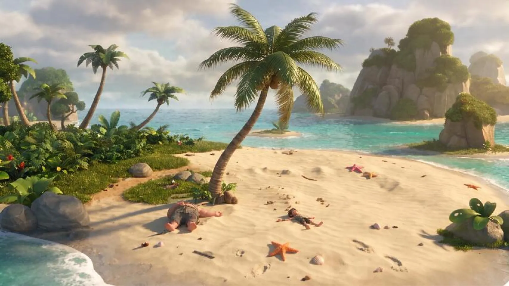
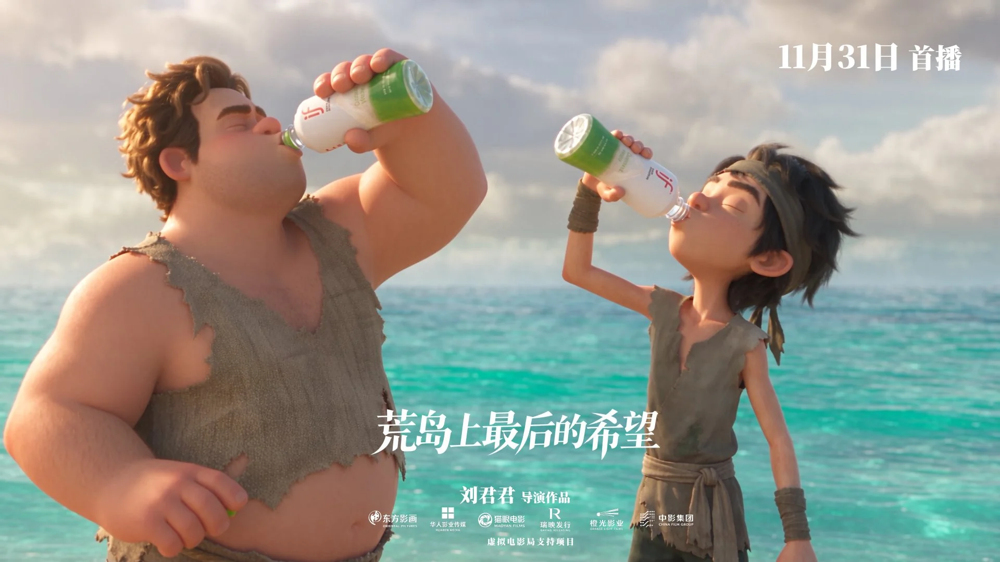
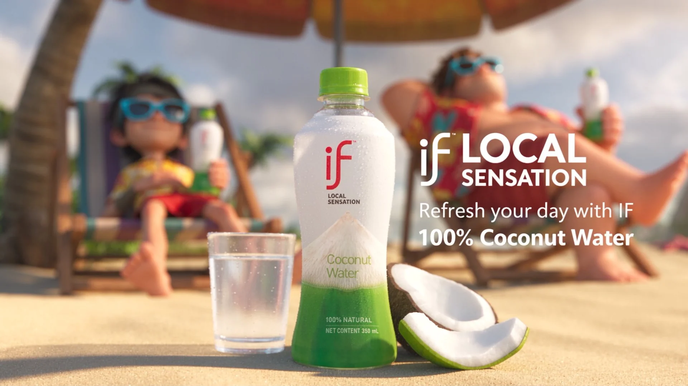

《荒岛上的希望》短片简介
一场意外，一高一矮、一胖一瘦的两个倒霉蛋被海浪冲上了荒岛。
面对陌生的环境，两人开启了一场状况百出的荒野求生之旅。
从艰难寻找食物，到终于在椰子树下喝上期待已久的椰子水，他们的荒岛生活总算迎来了转机。
然而，当两人发现椰子已经喝空，正意犹未尽时，海浪却意外送来了新的惊喜——if LOCAL SENSATION 椰子水！
一口清爽之后，刷新了他们的一天，眼前的荒岛仿佛瞬间变成了度假天堂：破旧衣服变成夏威夷花衬衫，狼狈的求生者变成悠闲的度假客。两个原本疲惫不堪的搭档，就这样开启了一场意想不到的海岛假期。


02:35 · 1280×720 · 有对白与音效